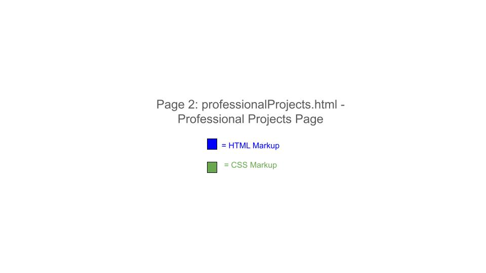
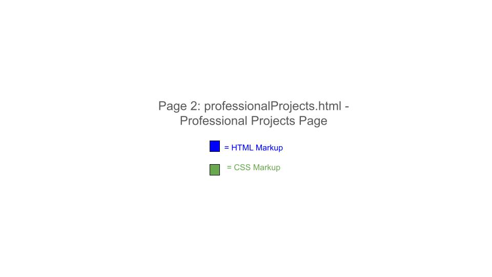
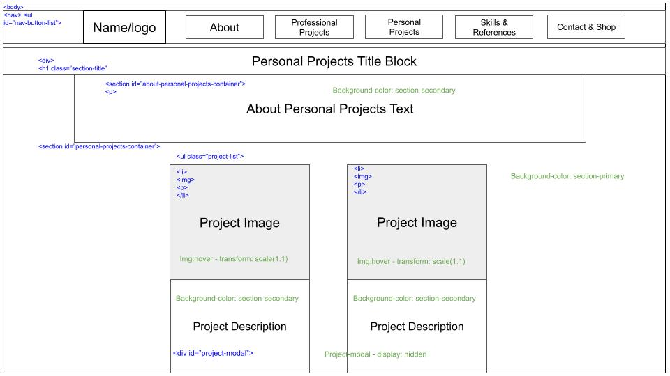
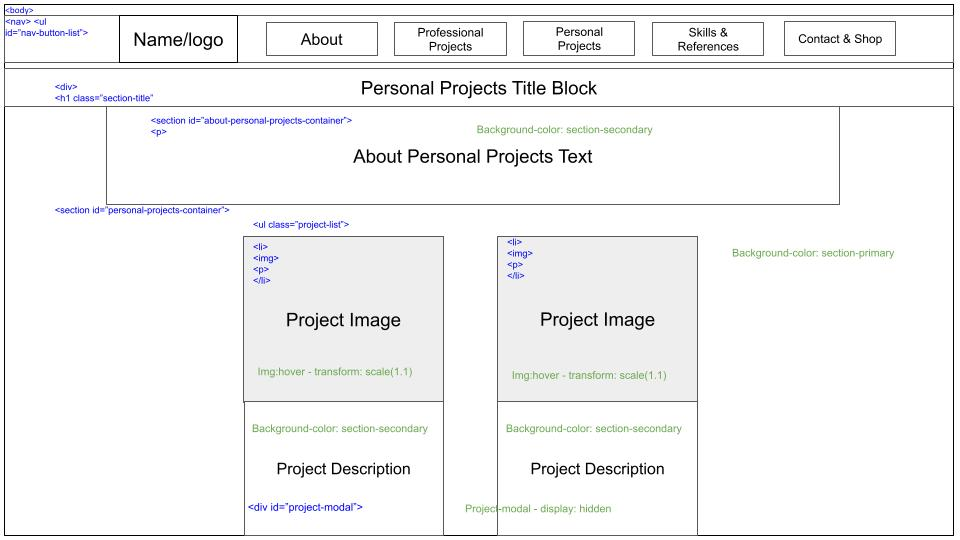

Introduction
The essential story told by my portfolio site reflects my own aspirations for professional development and what I hope to achieve in the future. It is my hope that one day I will be able to design and create games that people love.
The site is designed for future employers and collaborators, highlighting what I hope will be my future expertise in game development and design, along with my current passions for creative writing and storytelling.
The structure I chose to implement reflects my desire to keep things simple and look good, rather than make something over-complicated and have it become messy. I wanted my website to be easy to navigate, colourful and straight to the point.
Inspiration
Three professional portfolio sites which inspired my design:
- Portfolio Site 1 - https://iamdeantate.com
What I learned:
- I initially found the layout of this website to be too bland for my liking and I wasn't sure how I could draw much inspiration from it.
- I found the text hard to read and some of the pages to be too long, to then have to scroll back up to the top to navigate somewhere else.
- There is a lot of dead space between items and sections which is also something I wanted to avoid where possible.
- The main inspiration I drew from this website was from it's homepage, for which I put to use on the Skills & References page of my own. I felt the Introduction was friendly and to show a picture of yourself is a somewhat common practice for CV's and portfolio's alike.
- From this website I decided to dedicate a page to helping potential employers/collaborators get to know me better by including a profile picture and detailing my passions for creativity.
- Portfolio Site 2 - https://hugo.fyi
What I learned:
- I drew many inspirations from this website; the first and foremost would be the sticky nav bar. Although The nav bar leads you to different places on the same page for this website, having it follow the user's scrolling is a highly beneficial attribute that I also adopted for my own.
- The mouse hover animations on the project tiles were something that I also wanted to include.
- The video compilation when the website first loads was something that grabbed my attention immediately and was something else that I wanted to recreate myself.
- The structure of having a featured project, professional and personal works showcased individually was also another key factor in my website's design.
- The downfall of this website I feel is that there is too much on one page and it can often take quite some time to load.
- Portfolio Site 3 - https://www.davidshaver.net
What I learned:
- I felt the colour scheme and font choice helped this website stand out a lot.
- There were clearly defined borders for each section on the page.
- The structure of this website was easy to navigate and showcased the works elegeantly without going over the top.
- I initially wanted to include the drop-down options in the nav bar on my own website, but decided it would be unneccessary in it's current state. However, when I do actually make some projects of my own, this is something I would like to include.
Accessibility
I ensured my site is accessible by:
- Providing clear alt text for all media.
- Selecting a good colour scheme to generate contrast for readability.
- The project-modals I designed, present the same project information as the project-cards but centered and in a larger format.
Usability
I considered usability by:
- Ensuring intuitive navigation with clearly labeled buttons and links.
- Using media queries to make my website responsive across multiple devices and screen widths.
- Providing quick load times by pre-processing images I used for my "project art".
Learning
Throughout the process, I learned:
- How to implement responsive design using media queries, fortunately I was able to find all the information I needed on W3Schools and StackOverflow when doing my research.
- How to create a form using HTML, I was able to find the relevant information I needed on W3Schools.
- How to incorporate my knowledge of JavaScript so that it functions as part of the website. This was done with a lot of trial and error on my part, along with the use of W3Schools to make sure I knew how use the right methods such as querySelectorAll() to select all items of a given class.
Evaluation I: What Went Well
The use of JavaScript to help generate modal pop-ups was, in my opinion, particularly successful. The thank-you-modal for the contact form provides a custom message based on the information the user had entered, which gives it a more personal feel.
The addition of the character counter to the contact form was also something that works well as it prevents overly long messages being sent.
The structure and style of the website I feel is bold, colourful and easy to navigate and would easily draw the attention of prospective employers and collaborators.
The simple block-design of my website was easy to follow and improve upon as the development underwent.
Evaluation II: Improvements
One area that really needs improvement is the contact form. Although it is functional on the front-end, I want to add back-end support using a library like Express to manage and store the form data on a server.
I would also like to add the functionality of having any contact messages sent by user's to be forwarded directly to my email.
For my future works I would remove the project-modals and have each project-card be linked to their own individual project page.
I would also like to add a more dynamic and functioning shop section and possibly a search bar or drop-down functionality, to the navigation bar.
I feel like the responsive styles could have been done better and more thoroughly.
Resources
- [1] H. Peters, 'Hugo Peters - Game Programming & Design Portfolio', 2024. [Online]. Available: https://hugo.fyi/#. [Accessed: 07- Aug- 2024]. Accessed for portfolio research and inspiration.
- [2] D. Shaver, 'David Shaver - Game Design Portfolio', 2024. [Online]. Available: https://www.davidshaver.net/. [Accessed: 07- Aug- 2024]. Accessed for portfolio research and inspiration.
- [3] D. Tate, 'Dean Tate - Game Developer Portfolio', 2024. [Online]. Available: https://www.iamdeantate.com. [Accessed: 07- Aug- 2024]. Accessed for portfolio research and inspiration.
- [4] Programiz, "JavaScript Program to Replace All Line Breaks with br", 2024. [Online]. Available: https://www.programiz.com/javascript/examples/replace-line-breaks#:~:text=The%20RegEx%20is%20used%20with,)%2F%20checks%20for%20line%20breaks.. [Accessed: 20-Aug-2024]. Accessed for research on how to replace new-line (\n) in JavaScript with an HTML breaktag for the thank-you-modal message.
1. pick some w3schools elements to quote - box shadow, text shadow, form, and any others
2. Add in the image and video websites used to create the media content
3. Search for more references to include and inlcude them in the code.
 

 
